Conversation 86
Warhammer Poppetjes Maken
Prompt 1 · You
hoe worden warhammer poppetjes gemaakt V.I. WA WH 40k
Response 1 · Google AI Mode
Het maken van Warhammer 40k-poppetjes (miniaturen) is een hoogtechnologisch proces dat plaatsvindt in de fabrieken van Games Workshop in Nottingham, Engeland. Het proces combineert modern digitaal design met zware industriële productietechnieken.  Reddit·r/Warhammer40k +1
Reddit·r/Warhammer40k +1
Reddit·r/Warhammer40k +1Het totale productieproces verloopt in vijf opeenvolgende stappen:
1. Concept en Digitaal Ontwerp (Sculpting)
Het proces begint bij het designteam. Getalenteerde kunstenaars maken eerst concepttekeningen. Vervolgens gebruiken digitale beeldhouwers geavanceerde 3D-software (zoals ZBrush) om het poppetje volledig in 3D te ontwerpen. Tijdens deze stap moeten de ontwerpers al slim nadenken over hoe het model in losse onderdelen gesneden kan worden, zodat het later goed uit een mal kan lossen.  YouTube·MS_Paints +1
YouTube·MS_Paints +1
YouTube·MS_Paints +12. Prototypes 3D-printen
Als het digitale model klaar is, wordt er een prototype gemaakt met industriële 3D-printers. Deze printers werken met extreem dunne laagjes (tot wel 16 micron) om elk minuscuul detail, van de schakels van een kettingzaagzwaard tot de rimpels op een gezicht, perfect zichtbaar te maken. Dit prototype wordt grondig gecontroleerd op fouten.
Tabletop Gaming
3. De Stalen Mallen Snijden (CAD & CNC-frezen)
Dit is de duurste en meest complexe stap. Met behulp van computergestuurde freesmachines (CNC) en vonkerosie (EDM) worden de details van het poppetje in loodzware blokken van gehard gereedschapsstaal uitgesneden. Deze mallen vormen de 'negatief'-afdruk van wat uiteindelijk het plastic raamwerk (de sprue) zal worden. Het maken van één zo'n mal kan wel 2 tot 8 weken duren en kost duizenden euro's, maar ze gaan wel honderdduizenden gietingen mee. YouTube·Flashing Badger Painting +4
YouTube·Flashing Badger Painting +44. Plastic Spuitgieten (Injection Molding)
Wanneer de stalen mal klaar is, gaat deze in een gigantische spuitgietmachine (die wel 12 ton druk kan uitoefenen). YouTube·MS_Paints +1
YouTube·MS_Paints +1- Het materiaal: Games Workshop gebruikt korrels van een specifiek type hard plastic genaamd polystyreen. Meestal voegen ze hier ongeveer 2% grijze kleurstof aan toe, wat de iconische Warhammer-grijze kleur oplevert. YouTube·Squidmar Miniatures +1
- Het gieten: De plastic korrels worden vloeibaar gesmolten en onder extreem hoge druk in de stalen mal geperst. YouTube·MS_Paints +1
- Het koelen: Binnen enkele seconden koelt de machine de mal met water af, waarna de mal opengaat en het harde plastic raamwerk er mechanisch uitgedrukt wordt. Dit hele proces duurt vaak minder dan een minuut per sprue. YouTube·Squidmar Miniatures
5. Kwaliteitscontrole en Verpakken
De versgegoten plastic frames worden door medewerkers en scanners gecontroleerd op gietfouten (zoals luchtbellen of misbaksels). Als alles goedgekeurd is, gaan de frames samen met de handleidingen en de kartonnen verpakkingen de distributieketen in, klaar om naar de winkels te worden verscheept. YouTube·MS_Paints
YouTube·MS_PaintsEn daarna? De hobbyist aan zet!
Zodra de doos bij de speler thuisstaat, begint het tweede deel van het proces. De speler knipt de onderdelen los met een hobbytangetje, schraapt de gietlijntjes weg, zet de miniaturen in elkaar met speciale plasticlijm (die het plastic chemisch aan elkaar smelt) en geeft ze tot slot hun unieke uiterlijk met primer en acrylverf. YouTube·The Command Phase +2
YouTube·The Command Phase +2Wil je meer weten over een specifiek deel van dit proces, bijvoorbeeld hoe de digitale ontwerpers te werk gaan, of ben je juist benieuwd naar de beste technieken om de poppetjes zelf in elkaar te zetten en te schilderen?
Source links preserved from this response
- www.reddit.com
https://www.reddit.com/r/Warhammer40k/comments/ubqm5d/what_is_the_warhammer_model_manufacturing_process/ - www.youtube.com
https://www.youtube.com/watch?v=pp7o5tqE4Xg - www.tabletopgaming.co.uk
https://www.tabletopgaming.co.uk/features/how-gaming-miniatures-are-made-from-sculpt-to-table/ - www.youtube.com
https://www.youtube.com/shorts/MMV_yKE68Ck - www.youtube.com
https://www.youtube.com/watch?v=_wUyehmXkfs - www.youtube.com
https://www.youtube.com/watch?v=n0lzELzyguc
Prompt 2 · You
zo maken ze lego ook toch?
Response 2 · Google AI Mode
Ja, exact! Het kernproces is bij LEGO en Warhammer nagenoeg hetzelfde: beide bedrijven maken gebruik van plastic spuitgieten (injection molding) met stalen precisiemallen onder gigantische druk.
Toch zijn er, ondanks dezelfde basistechniek, een aantal cruciale verschillen in het materiaal en het doel van het ontwerp:
De Overeenkomsten & Verschillen
| Kenmerk | LEGO | Warhammer 40k |
|---|---|---|
| Basistechniek | Spuitgieten met stalen mallen | Spuitgieten met stalen mallen |
| Type Plastic | ABS (Acrylonitril-butadieen-styreen) | Polystyreen (Harde kunststof) |
| Eigenschap Plastic | Zeer taai, krasbestendig en veerkrachtig (moet oneindig vast- en losklikken) | Hard en bros (moet extreem scherpe details vasthouden en smelt samen met plasticlijm) |
| Tolerantie / Precisie | Extreem hoog (binnen 0,002 mm). Elke steen uit 1980 moet perfect passen op een steen van nu. | Zeer hoog op detailniveau, maar onderdelen zijn bedoeld om permanent aan elkaar gelijmd te worden. |
| Productievorm | Losse, kant-en-klare steentjes die direct uit de machine vallen. | Een raamwerk (sprue) waarin alle losse onderdelen nog vastzitten. |
| Kleur | Gekleurde plastic korrels (felrood, blauw, geel, etc.) per batch. | Vrijwel altijd uniform grijs plastic (zodat de hobbyist het makkelijk kan overschilderen). |
Waarom vallen LEGO-blokjes los uit de machine en zit Warhammer in een raamwerk?
- Bij LEGO heeft elk blokje een eigen, relatief simpele vorm zonder 'ondersnijdingen' (complexe hoeken die klem komen te zitten in de mal). Hierdoor kan de stalen mal openschuiven en valt het blokje er direct uit in een bak.
- Bij Warhammer zijn de poppetjes veel te complex en gedetailleerd (denk aan wapperende mantels of uitstekende geweren). Als je dat in één keer zou gieten, krijg je de mal nooit meer open zonder het poppetje te slopen. Daarom worden de poppetjes opgedeeld in tientallen platte onderdelen die via de kanaaltjes in het raamwerk (the sprue) tegelijkertijd worden volgegoten.
Beide fabrieken behoren tot de absolute wereldtop als het gaat om de kwaliteit en nauwkeurigheid van hun plastic!
Vind je het leuk om te zien hoe zo'n stalen mal er van binnen uitziet, of wil je meer weten over waarom LEGO-plastic (ABS) zo ontzettend sterk is?
Prompt 3 · You
bonsai lego bloemen CC carbon copy hans solo
Response 3 · Google AI Mode
Dat is een creatieve mix van een paar van de meest iconische LEGO-sets en Star Wars-scènes ooit! Hoewel ze officieel uit verschillende series komen, vormen ze samen een perfecte 'crossover' voor verzamelaars.
Hier is hoe deze elementen in de LEGO-wereld passen:
De LEGO Botanicals & Star Wars Crossover
- Bonsai & Bloemen: LEGO heeft een enorm populaire Botanical Collection. De LEGO Bonsai Boom (set 10281) is legendarisch omdat je kunt wisselen tussen groene zomerbladeren en roze kersenbloesem. Grappig detail: als je goed naar de roze kersenbloesem kijkt, zie je dat de bloemetjes eigenlijk honderden piepkleine roze LEGO-kikkertjes zijn!
- Han Solo in Carbonite (CC): In Star Wars wordt Han Solo door Darth Vader ingevroren in een blok carboniet (carbonite). LEGO heeft hier een speciaal gegoten grijs/zwart element voor gemaakt waar een minifiguur in past of op gedrukt staat. Dit iconische onderdeel zit onder andere in sets zoals Jabba's Palace of Boba Fett's ruimteschip (Slave I).
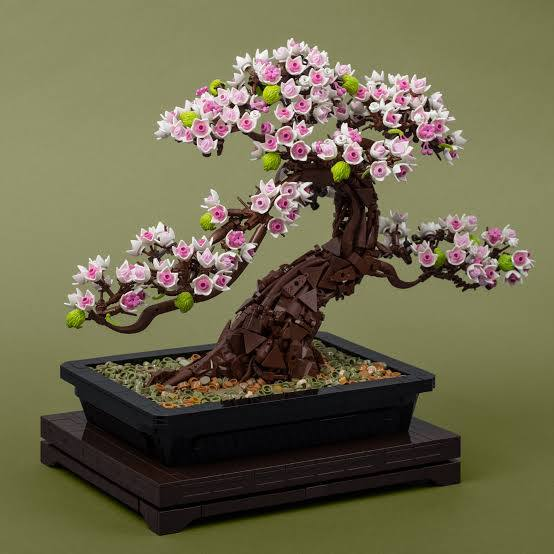
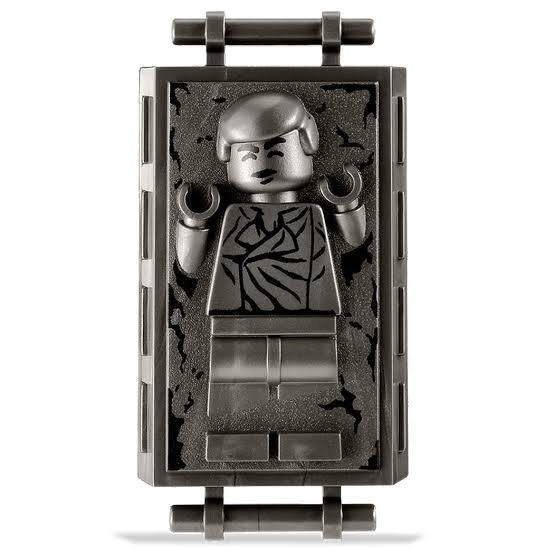
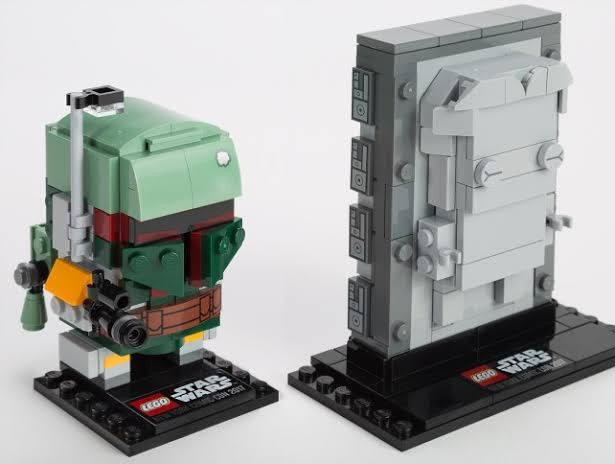
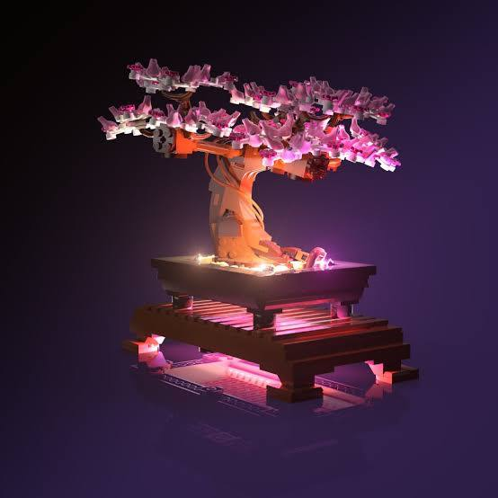
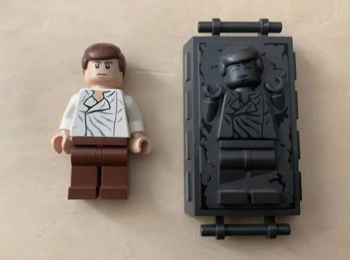
Waarom dit een geweldige combinatie is (MOC)
In de LEGO-community is het een bekende trend om verschillende werelden te mixen in een MOC (My Own Creation). Omdat de Bonsai-boom op een mooi Japans houten plateau staat, gebruiken veel fans het als een soort mini-diorama. Het is een fantastische interieur-grap om de ingevroren Han Solo subtiel als 'kunstwerk' of standbeeldje onder de roze bloemen van de Bonsai-boom te verstoppen.
Bedoelde je toevallig een specifieke MOC (eigen creatie) die je online hebt gezien waar iemand Han Solo in de Bonsai heeft gebouwd, of wil je weten in welke officiële Star Wars-sets je het carboniet-blok kunt vinden?
Prompt 4 · You
fresnel
Response 4 · Google AI Mode
Fresnel (uitgesproken als "Fren-nel") verwijst meestal naar de revolutionaire Fresnellens, een optisch ontwerp dat dikke, zware glaslenzen vervangt door een plat, trapsgewijs profiel. De techniek is in 1821 uitgevonden door de Franse natuurkundige Augustin-Jean Fresnel om het licht van vuurtorens kilometers ver over zee te werpen.
In plaats van één dikke bolling gebruikt een Fresnellens tientalle concentrische, prismatische ringen. Elke ring buigt het licht in exact dezelfde richting, waardoor je dezelfde focuskracht krijgt als een massieve lens, maar dan in een flinterdun, lichtgewicht jasje.
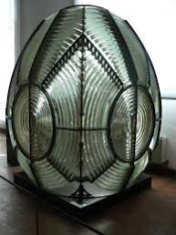
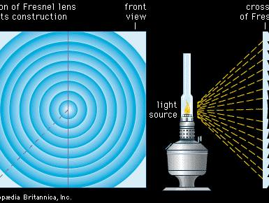
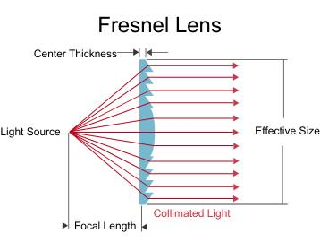
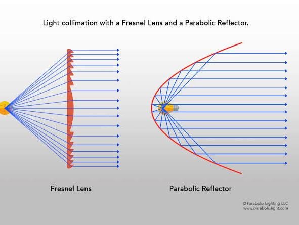
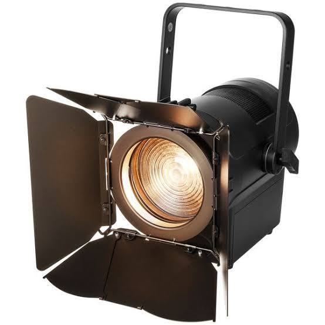
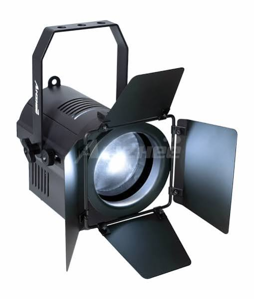
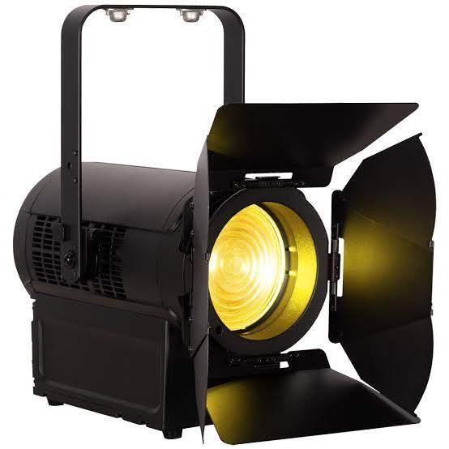
Waar wordt Fresnel vandaag de dag voor gebruikt?
- Theater- en filmverlichting: In de entertainmentindustrie is een "Fresnel" een standaard schijnwerper met een zachte, regelbare lichtbundel. Door de lens naar voren of achteren te schuiven, verandert de bundel van een brede gloed (flood) naar een gerichte stip (spot).
- Virtual Reality (VR) headsets: Veel VR-brillen (zoals oudere Oculus/Meta Quests of de PlayStation VR) gebruiken compacte Fresnellenzen om het scherm vlak voor je ogen scherp te stellen zonder dat de headset topzwaar wordt.
- PIR-bewegingssensoren: De matte, plastic kapjes op alarmsensoren of buitenlampen zijn kleine Fresnellenzen. Ze bundelen infrarode warmtestraling uit verschillende hoeken naar één centrale sensor.
- Zonne-energie: Grote, platte plastic Fresnellenzen worden gebruikt om zonlicht extreem krachtig te bundelen op zonnepanelen of om hitte-installaties aan te drijven.
Wil je meer weten over de natuurkunde achter de werking van deze lens, ben je specifiek op zoek naar Fresnel-schijnwerpers voor fotografie of theater, of zocht je informatie over de Fresnel-integralen uit de golfoptica?